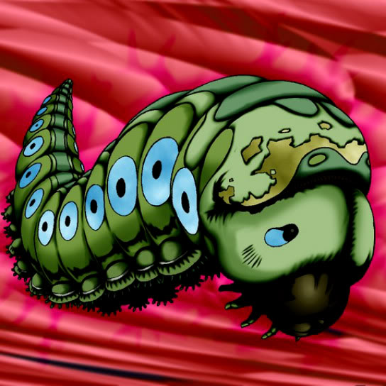

Petit Moth

Description: "Transforms to Larva of Moth when strengthened with Cocoon of Evolution."
STATS
ATK: 300
DEF: 200DECK COST
Deck Cost per Card: 10EFFECT NOT IMPLEMENTED
Fusion List (2 Possible Fusions)
- Petit Moth + Cocoon of Evolution = Larva of Moth
- Petit Moth + Two-Mouth Darkruler = Sword Arm of Dragon